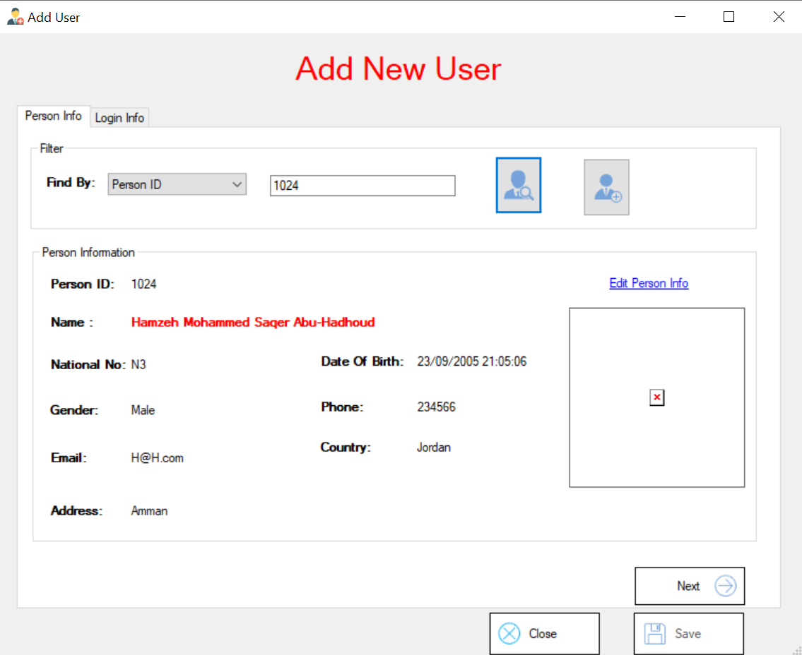
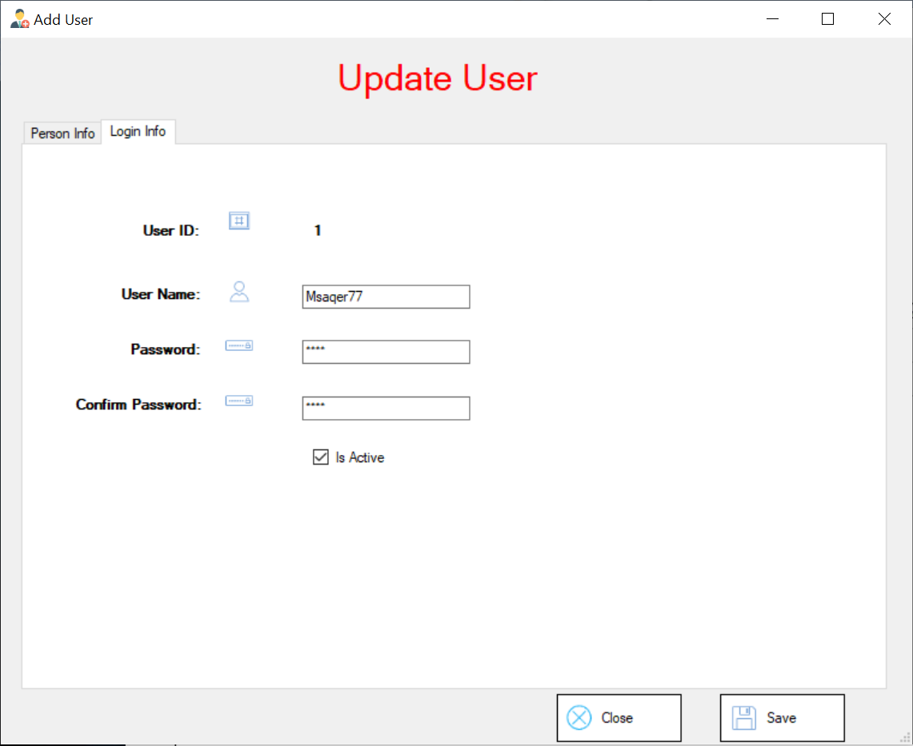

Cette formule vous permet de visualiser les personnes qui utilisent le système de contrôle.

Nous pouvons filtrer par : User ID, User Name, Person ID, Full Name, Is Active

Dans cette étape, nous pouvons filtrer les informations pour trouver un Utilisateur spécifique

Lorsque je clique sur le bouton droit, une liste contenant Afficher s'affiche : Show Details, Add New User, Edit, Delete, Change Password,

Lorsque clique sur context Show Details Ce formulaire affiche les informations de l'utilisateur et comporte un lien permettant de modifier ces informations.

Lorsque vous cliquez sur le bouton Ajouter ou que vous saisissez il semble que ce formulaire

Note: Nous avons un lien pour modifier ses informations et un bouton pour ajouter une nouvelle personne.
Si la personne est introuvable, le message « Personne introuvable » s'affiche. Le bouton « Save » reste désactivé et vous ne pouvez pas accéder à l'étape de connexion pour saisir un mot de passe.

Si vous possédez déjà un utilisateur avec Person ID: 1, vous ne pouvez pas en créer un autre avec le même identifiant. Le bouton « Enregistrer » reste désactivé et vous ne pouvez pas accéder à l'étape de connexion pour saisir un mot de passe.

lorsque nous entrons « ID de la personne » dans le contexte, le programme recherche la personne. Si elle est trouvée, les informations s'affichent dans « Informations sur la personne ».

Cliquez ensuite sur le bouton Next pour saisir les informations de connexion et enregistrer.

Lorsque je clique sur « Edit », les informations de l'utilisateur s'affichent.

On peut modifier le mot de passe.

Lorsque je clique sur Delete, une boîte de dialogue s'affiche me demandant de confirmer la suppression.

Lorsque je clique sur « Change Password », un formulaire de modification du mot de passe apparaît.